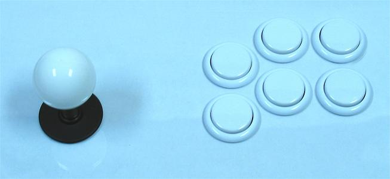
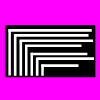
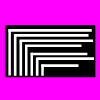

Panel Layout
Having a well-organized layout for your buttons and joystick will make your performance better. The panel needs to be intuitive, accessible, and comfortable. The devices need to be placed where simple thought can associate them. The various buttons need to be accessed quickly at any given moment. And the layout needs to fit the structure of the player’s body.

This section discusses the goals in choosing or making a layout. One of the main advantages of building a custom joystick controller is being able to determine your own layout. Even if you do not plan on making your own layout, you can learn to assess what will most likely work for you.
Quality Layout
Button Spacing
The buttons should be spaced proportioned to active fingertips so the fingers can rest across them and type like using multiple fingers on a keyboard. Buttons should not be spaced beyond a relaxed distance comfortable to the player's hand. Remember, this supported panel is an advantage over the thumb-pressed control pad. You have more than one finger, so use them.
Some essential things to consider are the structural constraints of the devices and panel. The top and securing parts of the buttons are wider than the holes in which they fit. For example, Sanwa and Seimitsu 30mm screw-in buttons have tops 33mm-34mm wide and nuts 35mm-36mm wide, so their holes need to have at least 10mm-12mm of panel between them (thinner standard Seimitsu nuts work for both). The panel has to withstand having these holes and buttons installed. If these installations are going to make for a fragile panel, either consider more spacing or, much preferably, a stronger panel.
The minimum space between the center of each button is equal to the largest diameter along the button device. So for Sanwa and Seimitsu 30mm screw-in buttons, the minimum distance between centers is 35mm-36mm. About 36mm-36.5mm is a common standard spacing between 30mm button centers. With 24mm buttons, the minimum distance is more like 29mm. If a player would be more comfortable with less spacing, smaller buttons should be considered. Keep in mind also that there is a large plunger face on standard buttons and centering the fingertips on every button is not entirely necessary. About 36mm or 39mm is a common standard spacing between button rows.
Row Shaping
When determining how to line up buttons side-by-side, consider both the intuition of the mind and the shape of the hand.
The American standard over-spaced 3x2 setup (which is a standard in many other places) is intuitive, but is not a good example of an accessible layout. The fingers have to make unnecessary adjustment to suit the panel when the panel should suit the fingers. Often when you see players using this panel, they are pressing every button with their index and middle finger when the index finger should cover the first column, the middle the second, and the ring the third. This common poor layout is another reason Americans tend not to complete well in fighting games.
Given the shape of the human hand, buttons should also be rowed in arches. Fingers do not line up horizontally in a nice row. The middle finger sticks out and the pinky is short. Buttons meant for the index finger should be set lower than corresponding ones meant for the middle finger. Unless you have a unique hand, aligning buttons with your naturally set fingertips will form an arch. Buttons running in arches instead of even rows can be slightly less intuitive, but anatomy and some training more than make up for this.
Angle and Joystick and Buttons Spacing
Consider the angle at which each hand will best rest for play on the panel. This is affected most by how much the player usually bends elbows and wrists, and how close hands are from one another while playing, and how much the hand twists with its palm resting level on a flat surface. This will determine the angle of the button layout and the spacing between the buttons and joystick.
Most players use straight or near-straight elbows with the hands at about half the spacing of the shoulders, lightly slanting them on the panel. For most hands, when the whole base of the palm rests on a flat surface, the hand twists to face more inward and fingers angle toward the inside.
A horizontal distance of about 5.9, 6.3, or 9.5 centimeters between the middle of the joystick and the middle of the leftmost button are common standards. Many players prefer a layout slanted a bit clockwise (usually about 10 degrees) because their hand and fingers slant while in a comfortable position, and rows of buttons can be closer together when they are a bit staggered; it is often quicker to move fingers between rows when they are slanted.
Relative Joystick Distance
There are many ways in which different players hold the joystick. The palm faces upward, inward, or downward. The thumb and/or palm sits on the outside, top, or inside of the handle. The shaft can sit between different neighboring fingers. Part of the hand may rest on the panel or the dust washer. And fingertips can be in various locations.
The joystick should not automatically be placed at some average distance relative to the buttons. When the wrists are placed in line with the control panel (as they comfortably should be placed), the joystick hand will clench around the joystick, while the buttons hand will be open and more spread. This means the fingertips on the buttons tend to reach farther than the fist on the joystick hand. Using two rows of buttons, the joystick may be more in line with the bottom row than the average of all the buttons.
Common standards for the vertical distance of the joystick relative to the buttons include making an average distance relative to all buttons, making it level with the highest button on the lowest row, making it level with the lowest index-finger button, making it 9.5mm-10mm below the index-finger button on the top row, and making it in line with the middle and ring finger buttons on the lowest row. These rules also apply to panels with only one row, with the one row also being the lowest row.
Quantity of Buttons
More buttons do not always make the arcade controller better. More buttons get in the way, and not getting to rest the pinky finger can be a disadvantage.
There is not much reason to use more than eight buttons on the main area (six is often better). Place one or two buttons (or more, at least two I suggest) away (as start buttons usually are) to use on options. Smaller buttons make nice option buttons. Many joystick controller builders put buttons on the sides or back of the controller to use in pinball sims and/or options. Excess button holes are often filled using button hole plug accessories.
Palm Placement
A big problem with many designs is there is not a large enough panel in front and on the sides of the devices to rest the hands. In addition to well-organized buttons and joysticks, a large enough empty space of panel should be available to rest the palms.
Standard Layouts
If you do not want to use a layout customized specifically to you, there are of course many standard layouts for control panels. Below are examples which may also give some customizing ideas, but there is a good chance you can find one that suits you.
Exact placement of the joystick and buttons, and angle of buttons, can differ from the images. There are especially many different ways to place the pinky buttons, but most controller makers prefer not to have them anyways. You do not have to use every button in each layout, especially the pinky ones, and do not have to stick to the exact angling or placement of many of the devices.
Most diagrams have both a 36mm (the default of the two) and a 36.5mm button-spacing layout available; the links for the resolution and spacing are under each image. The added isolated small dots in the images represent alternate places for joysticks and buttons. The added crooked lines in some images are used to line up the layout at 10 degrees for slanting the buttons.
These images are produced to scale. If you want to print them, note the PPI. For example, the first linked 300 PPI image is 2808 pixels wide. So to make a scale print, make sure the printer prints it 2808 / 300 = 9.36 inches wide. And if you want to change the spacing in the images by a certain scale, multiply this number by an appropriate percent. So for small buttons, 30mm spacing is an appropriate spacing; 30mm / 36.5mm = 82.2%; .822 * 9.36 = 7.69 inches wide. You need to figure how to place the joystick separately if you do this.
Feeling these can give you an idea of what layout will likely suit you. I highly recommend feeling printouts (or your monitor) if you are not familiar with many of the layouts.
Using the given measurements in the diagrams, you can also make your own diagrams how you see fit.
This is the American Street Fighter layout given by Capcom USA. It has some strange wide-spacing and does not suit the structure of the human hand. I do not advocated squared layouts like this one and others. You can feel some of these even layouts for yourself and assess the level of awkwardness from bending some fingers more than others.
This is a clustered grid layout. It has more of an appropriate spacing, but the squareness still does not suit the human hand very well. Additional dots are there for making a Neo Geo layout which is more appropriate for the human hand.
Same as the previous layout, but space is added between the rows.
This layout inclines straight until the pinky buttons.
Same as the previous layout, but space is added between rows.
This is a transitioning layout used by Hori in some of their joysticks. Some dots are added to show where to put the joystick if only using the right six buttons. In most of their joysticks, they use the standard Japanese arcade layout (shown below).
Same as the previous layout, but space is added between rows.
This is a precise diagram of the Sega layout used in Astro City, Blast City (the bottom middle-finger button is .5mm more to the right, and the joystick is in the higher position), Net City, and Versus City cabinets for player 1 or single player. This layout (or an almost identical one) is used in most arcade machines and controllers in Japan. It is very appropriate for quick, comfortable, and precise play. If you have not used a slanted layout like this, feel it; it may surprise you.
This is a precise diagram of the Sega layout for player 2. It is very close to a non-slanted version of the player 1, but has a few differently proportioned buttons; it can be tilted to something similar to the player 1 layout. A few alternate placements of the pinky buttons are noted.
This layout is somewhat of a mix between the standard player 1 and player 2 layouts. The curvature is not as defined.
Same as the previous layout, but space is added between rows.
This layout uses the standard Japanese arcade design, but the proportions are set so the buttons fit together more evenly and closely. The buttons form equilateral triangles and a square.
Same as the previous layout, but space is added between rows.
The layout does a direct build of the slanted layout. It uses half-steps like those in the Hori layout.
Same as the previous layout, but space is added between rows.
This layout takes the arcade layout and shifts the top row a bit to the right. This is the precise layout used in Taito Vewlix cabinets. Note that the bottom index and middle finger buttons are closer than 36mm to one another; they will not work with nuts stocked with Sanwa screw-in buttons.
This is a generic version of the Vewlix shifted layout. Note the top index and bottom middle finger buttons are closer together than the standard spacing and will not work with Sanwa nuts.
Mesh template from which various layouts can be made.
Diagonal square template from which various layouts can be made.
Zigzag template from which various layouts can be made.
Choosing or Setting Your Layout
If one of the standard layouts matches you well and feels good, make it for your custom joystick or find a controller with the same or similar layout. You could also tweak some of the given layouts.
Otherwise, if you are making a custom controller, with the goals in mind, place your hands out how you would like to engage the panel. Find a comfortable and ready position for your shoulders, elbows, wrists, and fingers. It helps to hold the handle of a joystick to see the distance where the joystick should be placed. Then note where you want the joystick positioned in your hand and where you want your fingertips for each button.
You can use a little coloring on your fingertips and some paper to see better how your fingers tend to rest. A draw program may help you refine the precision of your design. You can also install your devices in a sheet of cardboard as an inexpensive test of your layout if you feel more testing is necessary.
You may also want to study some playing techniques, trying to figure which technique suits you best, before determining your layout.
Centering Your Layout and Sizing Your Panel
Panel layout and play-style actually have the biggest impact on the dimensions of a controller.
If you center mostly on the utility aspect (which I most prefer) in sizing your control panel in a custom controller, your layout and the way you position your hands will determine the position of the buttons and joystick, which will determine the size of the control panel, which will determine the size of the controller box. The utility aspect should determine at least the minimum flat dimensions of the controller.
There are different philosophies for placing the layout in the panel. One of the most common centering methods is to center horizontally the midpoint between the center of the joystick and the center of the right-most button.
But from my perspective, the best thing to do is set a printout of your chosen layout on a surface, engage it how you normally would if you were playing with your different play-styles (including perhaps only using one or two of the right-most buttons), and note where your fingers and palms touch the surface. Note the dimensions of the area where you set your hands, note the needed space to fit the base of the buttons and joystick in the given box-design, and add a little buffer area around it. This should be the minimum dimensions of the panel; in my philosophy, it will usually be the final dimensions of and how the devices are set in the panel. If you want to center the layout differently, make sure there is room for your hands in your play-styles.
From the decision of how to size the panel, the box length and width to hold the panel can be determined. If your hands will at least partly rest on the box itself, the combined areas should fit the minimum play area. If the box will hold multiple panels, if should be sized to given room to each of the desired layouts.


 
